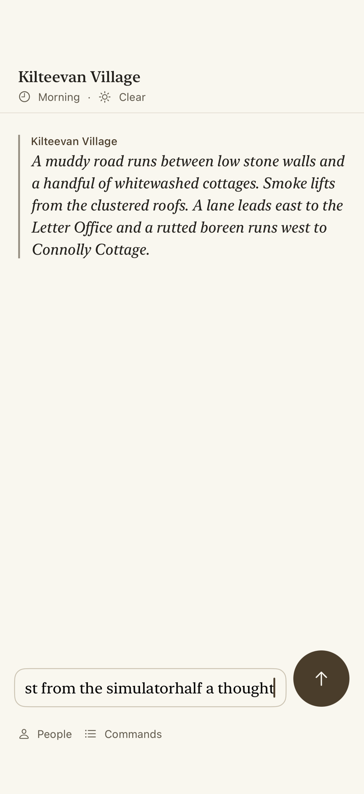

PR #2182, part of
issue #2022. A tester types /bug or shakes the phone; the app sends the report and a screenshot to the new limerick-bug-report service, which keeps them in a private inbox for the bug-triage skill.
iPhone 17 simulator, iOS 26.4, Debug build of this branch on the shared engine. Not a physical-device result.
UI test RundaleCommandsUITests.testBugCommandSendsAReportWithoutATurn, recorded with record-ui-test.py and RUNDALE_DEMO_HOLD=3. UI tests send into memory instead of the live service.
The player walks to Connolly Cottage, types /bu, picks /bug from the suggestions, and adds a description. Send shows "Sending the bug report…", then "Bug report sent. Thank you." The draft clears, and nothing is added to the transcript.
The app launched normally (not a UI test) with a temporary App Check debug token, deleted afterwards. The Simulator's Device > Shake sends the report through the real Firebase sign-in and App Check path to limerick-bug-report in limerick-prod.
The notice ends at "Bug report sent. Thank you." and the draft stays. It still holds text typed in an earlier smoke test, because drafts survive relaunch.
Afterwards, bug-report/deploy/limerick-prod.sh list showed the report waiting, and pull downloaded it and emptied the inbox. What arrived, without the reporter's Firebase UID:
{
"reportId": "562CFF7F-645E-46D3-8D1D-124FEF392162",
"receivedAt": "2026-10-05T18:20:33.738Z",
"description": "",
"report": "Rundale bug report\n(no description)\n\nBuild: 0.1.0 (8) · engine contract 1.0\nScene: Kilteevan Village · Morning · Clear\nPresent: no one\n\nTranscript (newest last):\n* A muddy road runs between low stone walls and a handful of whitewashed cottages. Smoke lifts from the clustered roofs. A lane leads east to the Letter Office and a rutted boreen runs west to Connolly Cottage.\n\nEndpoint calls since launch: none\n",
"build": "0.1.0 (8)",
"device": "arm64 iOS Version 26.4.1 (Build 23E254a)",
"screenshot": true
}
The screenshot that arrived with it, which normally stays private:
